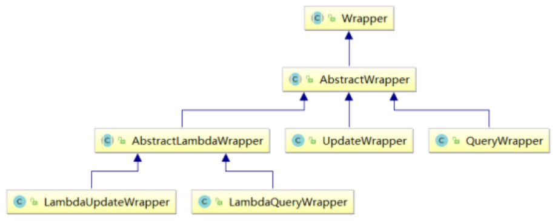
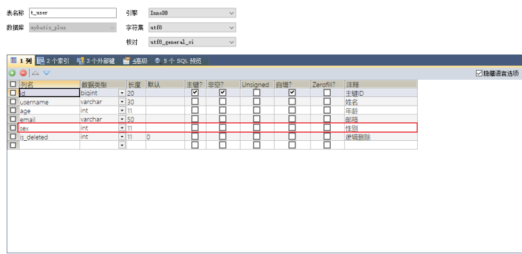

MyBatis-Plus MyBatis-Plus简介 注: 本文是在SpringBoot中演示使用Mybatis-Puls
1 、简介 MyBatis-Plus （简称 MP）是一个 MyBatis的增强工具 ，在 MyBatis 的基础上 只做增强不做改变 ，为简化开发、提高效率而生 。
2 、特性
无侵入 ：只做增强不做改变，引入它不会对现有工程产生影响，如丝般顺滑
损耗小 ：启动即会自动注入基本 CURD，性能基本无损耗，直接面向对象操作
强大的 CRUD 操作 ：内置通用 Mapper、通用 Service，仅仅通过少量配置即可实现单表大部分
CRUD 操作，更有强大的条件构造器，满足各类使用需求
支持 Lambda 形式调用 ：通过 Lambda 表达式，方便的编写各类查询条件，无需再担心字段写错
支持主键自动生成 ：支持多达 4 种主键策略（内含分布式唯一 ID 生成器 - Sequence），可自由
配置，完美解决主键问题
支持 ActiveRecord 模式 ：支持 ActiveRecord 形式调用，实体类只需继承 Model 类即可进行强
大的 CRUD 操作
支持自定义全局通用操作 ：支持全局通用方法注入（ Write once, use anywhere ）
内置代码生成器 ：采用代码或者 Maven 插件可快速生成 Mapper 、 Model 、 Service 、
Controller 层代码，支持模板引擎，更有超多自定义配置等您来使用
内置分页插件 ：基于 MyBatis 物理分页，开发者无需关心具体操作，配置好插件之后，写分页等
同于普通 List 查询
分页插件支持多种数据库 ：支持 MySQL、MariaDB、Oracle、DB2、H2、HSQL、SQLite、
Postgre、SQLServer 等多种数据库
内置性能分析插件 ：可输出 SQL 语句以及其执行时间，建议开发测试时启用该功能，能快速揪出
内置全局拦截插件 ：提供全表 delete 、 update 操作智能分析阻断，也可自定义拦截规则，预防
3 、支持数据库 任何能使用MyBatis进行 CRUD, 并且支持标准 SQL 的数据库，具体支持情况如下 MySQL，Oracle，DB2，H2，HSQL，SQLite，PostgreSQL，SQLServer，Phoenix，Gauss ，ClickHouse，Sybase，OceanBase，Firebird，Cubrid，Goldilocks，csiidb 达梦数据库，虚谷数据库，人大金仓数据库，南大通用(华库)数据库，南大通用数据库，神通数据库，瀚高数据库
4 、代码及文档地址
入门案例 依赖:
1 2 3 4 5 6 7 8 9 10 11 <dependency > <groupId > com.baomidou</groupId > <artifactId > mybatis-plus-boot-starter</artifactId > <version > 3.5.1</version > </dependency > <dependency > <groupId > mysql</groupId > <artifactId > mysql-connector-java</artifactId > <scope > runtime</scope > </dependency >
在application.yaml中配置好JDBC连接信息
a>创建表
1 2 3 4 5 6 7 8 9 CREATE DATABASE `mybatis_plus` ;use `mybatis_plus`; CREATE TABLE `user ` (`id` bigint (20 ) NOT NULL COMMENT '主键ID' , `name` varchar (30 ) DEFAULT NULL COMMENT '姓名' , `age` int (11 ) DEFAULT NULL COMMENT '年龄' , `email` varchar (50 ) DEFAULT NULL COMMENT '邮箱' , PRIMARY KEY (`id`)) ENGINE= InnoDB DEFAULT CHARSET= utf8;
b>添加数据
1 2 3 4 5 6 INSERT INTO user (id, name, age, email) VALUES (1 , 'Jone' , 18 , 'test1@baomidou.com' ), (2 , 'Jack' , 20 , 'test2@baomidou.com' ), (3 , 'Tom' , 28 , 'test3@baomidou.com' ), (4 , 'Sandy' , 21 , 'test4@baomidou.com' ), (5 , 'Billie' , 24 , 'test5@baomidou.com' );
c>添加实体
1 2 3 4 5 6 7 @Data public class User { private Long id; private String name; private Integer age; private String email; }
d>添加mapper
BaseMapper是MyBatis-Plus提供的模板mapper，其中包含了基本的CRUD方法，泛型为操作的 实体类型
1 2 3 @Mapp public interface UserMapper extends BaseMapper <User> {}
e>测试
1 2 3 4 5 6 7 8 9 10 11 @SpringBootTest public class MybatisPlusTest { @Autowired private UserMapper userMapper; @Test public void testSelectList () { userMapper.selectList(null ).forEach(System.out::println); } }
显示日志与关闭 在application.yml中配置mp的sql执行日志
1 2 3 4 mybatis-plus: configuration: log-impl: org.apache.ibatis.logging.stdout.StdOutImpl
tips: 再开发测试时,还可以将Mybatis和SpringBoot的banner以及debug日志关闭, 避免影响干扰结果:
在application.yaml中:
1 2 3 4 5 6 mybatis-plus: banner: false spring: main: banner-mode: off
基本CRUD 1 、BaseMapper MyBatis-Plus中的基本CRUD在内置的BaseMapper中都已得到了实现，我们可以直接使用，通过观察BaseMapper中的方法，大多方法中都有Wrapper类型的形参，此为条件构造器，可针 对于SQL语句设置不同的条件，若没有条件，则可以为该形参赋值null，即查询（删除/修改）所有 , 数据接口如 下：
1 2 3 4 5 6 7 8 9 10 11 12 13 14 15 16 17 18 19 20 21 22 23 24 25 26 27 28 29 30 31 32 33 34 35 36 37 38 39 40 41 42 43 44 45 46 47 48 49 50 51 52 53 54 55 56 57 58 59 60 61 62 63 64 65 66 67 68 69 70 71 72 73 74 75 76 77 78 79 80 81 82 83 84 85 86 87 88 89 90 91 92 93 94 95 96 97 98 99 100 101 102 103 104 105 106 107 108 109 110 111 112 113 114 115 116 117 118 public interface BaseMapper <T> extends Mapper <T> { int insert (T entity) ; int deleteById (Serializable id) ; int deleteByMap (@Param(Constants.COLUMN_MAP) Map<String, Object> columnMap) ; int delete (@Param(Constants.WRAPPER) Wrapper<T> queryWrapper) ; int deleteBatchIds (@Param(Constants.COLLECTION) Collection<? extends Serializable> idList) ; int updateById (@Param(Constants.ENTITY) T entity) ; int update (@Param(Constants.ENTITY) T entity, @Param(Constants.WRAPPER) Wrapper<T> updateWrapper) ; T selectById (Serializable id) ; List<T> selectBatchIds (@Param(Constants.COLLECTION) Collection<? extends Serializable> idList) ; List<T> selectByMap (@Param(Constants.COLUMN_MAP) Map<String, Object>columnMap) ; default T selectOne (@Param(Constants.WRAPPER) Wrapper<T> queryWrapper) { List<T> ts = this .selectList(queryWrapper); if (CollectionUtils.isNotEmpty(ts)) { if (ts.size() != 1 ) { throw ExceptionUtils.mpe("One record is expected, but the query result is multiple records" ); } return ts.get(0 ); } return null ; } Long selectCount (@Param(Constants.WRAPPER) Wrapper<T> queryWrapper) ; List<T> selectList (@Param(Constants.WRAPPER) Wrapper<T> queryWrapper) ; List<Map<String, Object>> selectMaps (@Param(Constants.WRAPPER) , Wrapper<T>queryWrapper) ; List<Object> selectObjs (@Param(Constants.WRAPPER) Wrapper<T> queryWrapper) ; <P extends IPage <T>> P selectPage (P page, @Param(Constants.WRAPPER) Wrapper<T> queryWrapper) ; <P extends IPage <Map<String, Object>>> P selectMapsPage (P page,@Param(Constants.WRAPPER) Wrapper<T> queryWrapper) ;
2、插入 1 2 3 4 5 6 7 8 9 10 @Test public void testInsert () {User user = new User (null , "张三" , 23 , "zhangsan@atguigu.com" ); int result = userMapper.insert(user); System.out.println("受影响行数：" +result); System.out.println("id自动获取：" +user.getId()); }
最终执行的结果，所获取的id为1475754982694199298, 这是因为MyBatis-Plus在实现插入数据时，会默认基于雪花算法的策略生成id
3、删除 通过id删除记录
1 2 3 4 5 6 7 @Test public void testDeleteById () { int result = userMapper.deleteById(1475754982694199298L ); System.out.println("受影响行数：" +result); }
通过id批量删除记录
1 2 3 4 5 6 7 8 @Test public void testDeleteBatchIds () { List<Long> idList = Arrays.asList(1L , 2L , 3L ); int result = userMapper.deleteBatchIds(idList); System.out.println("受影响行数：" +result); }
通过map条件删除记录
1 2 3 4 5 6 7 8 9 10 @Test public void testDeleteByMap () { Map<String, Object> map = new HashMap <>(); map.put("age" , 23 ); map.put("name" , "张三" ); int result = userMapper.deleteByMap(map); System.out.println("受影响行数：" +result); }
4、修改 1 2 3 4 5 6 7 @Test public void testUpdateById () {User user = new User (4L , "admin" , 22 , null ); int result = userMapper.updateById(user); System.out.println("受影响行数：" +result); }
5、查询 根据id查询用户信息
1 2 3 4 5 6 7 @Test public void testSelectById () { User user = userMapper.selectById(4L ); System.out.println(user); }
根据多个id查询多个用户信息
1 2 3 4 5 6 7 8 @Test public void testSelectBatchIds () { List<Long> idList = Arrays.asList(4L , 5L ); List<User> list = userMapper.selectBatchIds(idList); list.forEach(System.out::println); }
通过map条件查询用户信息
1 2 3 4 5 6 7 8 9 10 @Test public void testSelectByMap () {Map<String, Object> map = new HashMap <>(); map.put("age" , 22 ); map.put("name" , "admin" ); List<User> list = userMapper.selectByMap(map); list.forEach(System.out::println); }
查询所有数据
1 2 3 4 5 6 7 @Test public void testSelectList () { List<User> list = userMapper.selectList(null ); list.forEach(System.out::println); }
6、通用Service 通用 Service CRUD 封装Service接口，进一步封装 CRUD 采用 get 查询单行 remove 删除 list 查询集合 page 分页 前缀命名方式区分 Mapper 层避免混淆
泛型 T 为任意实体对象
建议如果存在自定义通用 Service 方法的可能，请创建自己的 IBaseService 继承 Mybatis-Plus 提供的基类
api细节请参考官网: CRUD 接口 | MyBatis-Plus (baomidou.com)
IService MyBatis-Plus中有一个接口 IService和其实现类 ServiceImpl，封装了常见的业务层逻辑
创建Service接口
1 2 3 4 5 public interface UserService extends IService <User> {}
Service实现类
1 2 3 4 5 6 7 @Service public class UserServiceImpl extends ServiceImpl <UserMapper, User> implements UserService {}
测试实例: 测试查询记录数
1 2 3 4 5 6 7 @Autowired private UserService userService;@Test public void testGetCount () { long count = userService.count(); System.out.println("总记录数：" + count); }
测试批量插入
1 2 3 4 5 6 7 8 9 10 11 12 13 14 15 16 17 @Autowired private UserService userService;@Test public void testSaveBatch () { ArrayList<User> users = new ArrayList <>(); for (int i = 0 ; i < 5 ; i++) { User user = new User (); user.setName("ybc" + i); user.setAge(20 + i); users.add(user); } userService.saveBatch(users); }
常用注解 1 、@TableName 此注解主要是用来解决实体类与数据库的数据表名称不一致的情况, 通过在实体类上加上该注解即可解决该问题
1 2 3 4 @TableName("t_user") public class User { .... }
此外,如果数据表有规定的前缀, 我们还可以通过配置文件applcation.yaml设置数据表的全局前缀:
1 2 3 4 5 6 7 8 mybatis-plus: configuration: log-impl: org.apache.ibatis.logging.stdout.StdOutImpl global-config: db-config: table-prefix: t_
2、@TableId MyBatis-Plus在实现CRUD时，会默认将id作为主键列，并在插入数据时，默认基于雪花算法的策略生成id, 若实体类和表中表示主键的不是id，而是其他字段，例如uid，MyBatis-Plus不会自动识别uid为主键, 我们可以通过在实体类中uid属性上通过@TableId将其标为主键解决该问题
实体类主属性名与数据表主键字段名不一致解决方案:
若实体类中主键对应的属性为id ，而表中表示主键的字段为uid ，此时若只在属性id上添加注解 @TableId，则抛出异常Unknown column ‘id’ in ‘field list’，即MyBatis-Plus仍然会将id作为表的 主键操作，而表中表示主键的是字段uid 此时需要通过@TableId注解的value属性，指定表中的主键字段，@TableId(“uid”)或 @TableId(value=”uid”)
主键策略: @TableId的type属性用来定义主键策略:
值
描述
IdType.ASSIGN_ID（默 认）
基于雪花算法的策略生成数据id，与数据库id是否设置自增无关
IdType.AUTO
使用数据库的自增策略，注意，该类型请确保数据库设置了id自增， 否则无效
此外,还可以通过配置文件application.yaml全局配置主键策略:
1 2 3 4 5 6 7 8 9 10 mybatis-plus: configuration: log-impl: org.apache.ibatis.logging.stdout.StdOutImpl global-config: db-config: table-prefix: t_ id-type: auto
######## 拓展-雪花算法:
需要选择合适的方案去应对数据规模的增长，以应对逐渐增长的访问压力和数据量。 数据库的扩展方式主要包括：业务分库、主从复制，数据库分表。
数据库分表:
将不同业务数据分散存储到不同的数据库服务器，能够支撑百万甚至千万用户规模的业务，但如果业务继续发展，同一业务的单表数据也会达到单台数据库服务器的处理瓶颈。例如，淘宝的几亿用户数据， 如果全部存放在一台数据库服务器的一张表中，肯定是无法满足性能要求的，此时就需要对单表数据进 行拆分。 单表数据拆分有两种方式：垂直分表和水平分表。示意图如下：
垂直分表适合将表中某些不常用且占了大量空间的列拆分出去。 例如，前面示意图中的 nickname 和 description 字段，假设我们是一个婚恋网站，用户在筛选其他用户的时候，主要是用 age 和 sex 两个字段进行查询，而 nickname 和 description 两个字段主要用于展示，一般不会在业务查询中用到。description 本身又比较长，因此我们可以将这两个字段独立到另外 一张表中，这样在查询 age 和 sex 时，就能带来一定的性能提升。
水平分表适合表行数特别大的表 ，有的公司要求单表行数超过 5000 万就必须进行分表，这个数字可以作为参考，但并不是绝对标准，关键还是要看表的访问性能。对于一些比较复杂的表，可能超过 1000 万就要分表了；而对于一些简单的表，即使存储数据超过 1 亿行，也可以不分表。 但不管怎样，当看到表的数据量达到千万级别时，作为架构师就要警觉起来，因为这很可能是架构的性能瓶颈或者隐患。
水平分表相比垂直分表，会引入更多的复杂性，例如要求全局唯一的数据id该如何处理, 如下是一些常见的处理策略:
主键自增
①以最常见的用户 ID 为例，可以按照 1000000 的范围大小进行分段，1 ~ 999999 放到表 1中， 1000000 ~ 1999999 放到表2中，以此类推。
②复杂点：分段大小的选取。分段太小会导致切分后子表数量过多，增加维护复杂度；分段太大可能会 导致单表依然存在性能问题，一般建议分段大小在 100 万至 2000 万之间，具体需要根据业务选取合适 的分段大小。
③优点：可以随着数据的增加平滑地扩充新的表。例如，现在的用户是 100 万，如果增加到 1000 万， 只需要增加新的表就可以了，原有的数据不需要动。
④缺点：分布不均匀。假如按照 1000 万来进行分表，有可能某个分段实际存储的数据量只有 1 条，而 另外一个分段实际存储的数据量有 1000 万条。
取模
①同样以用户 ID 为例，假如我们一开始就规划了 10 个数据库表，可以简单地用 user_id % 10 的值来 表示数据所属的数据库表编号，ID 为 985 的用户放到编号为 5 的子表中，ID 为 10086 的用户放到编号 为 6 的子表中。
②复杂点：初始表数量的确定。表数量太多维护比较麻烦，表数量太少又可能导致单表性能存在问题。
③优点：表分布比较均匀。
④缺点：扩充新的表很麻烦，所有数据都要重分布。
雪花算法
雪花算法是由Twitter公布的分布式主键生成算法，它能够保证不同表的主键的不重复性，以及相同表的 主键的有序性。
①核心思想： 长度共64bit（一个long型）。首先是一个符号位，1bit标识，由于long基本类型在Java中是带符号的，最高位是符号位，正数是0，负 数是1，所以id一般是正数，最高位是0。41bit时间截(毫秒级)，存储的是时间截的差值（当前时间截 - 开始时间截)，结果约等于69.73年。 10bit作为机器的ID（5个bit是数据中心，5个bit的机器ID，可以部署在1024个节点）。 12bit作为毫秒内的流水号（意味着每个节点在每毫秒可以产生 4096 个 ID）。
②优点：整体上按照时间自增排序，并且整个分布式系统内不会产生ID碰撞，并且效率较高。
3、@TableField 若实体类中的属性使用的是驼峰命名风格，而表中的字段使用的是下划线命名风格 例如实体类属性userName，表中字段user_name 此时MyBatis-Plus会自动将下划线命名风格转化为驼峰命名风格 相当于在MyBatis中配置进行了大驼峰转下划线配置, 但如果实体类属性与数据表字段名无法进行大驼峰转下划线映射时, 就需要通过在实体类字段上添加@TableField("数据库字段名")来解决映射字段名不一致的问题, 例如: 实体类属性name，表中字段username
1 2 3 4 5 6 7 8 public class User { private Long id; @TableField("username") private string name; private Integer age; private string email; }
4、@TableLogic 引入一个逻辑删除的概念:
物理删除 ：真实删除，将对应数据从数据库中删除，之后查询不到此条被删除的数据 逻辑删除 ：假删除，将对应数据中代表是否被删除字段的状态修改为“被删除状态”，之后在数据库 中仍旧能看到此条数据记录, 常用与可能需要进行数据恢复的场景
mybatis提供的@TableLogic注解可以为我们实现逻辑删除功能提供遍历.
@TableLogic 支持所有数据类型（推荐使用 Integer、Boolean、LocalDateTime）如果数据库字段使用 datetime，字符串 null，另一个值支持配置为函数来获取值如now()
附录：
（1）逻辑删除是为了方便数据恢复和保护数据本身价值等等的一种方案，但实际就是删除。
（2）如果你需要频繁查出来看就不应使用逻辑删除，而是以一个状态去表示。
**该注解有两个属性值: **
==注意，该注解只对自动注入的 sql 起效==
@TableLogic 对于 CIUD 的限制
插入（insert）
不作限制
查找（select）
@TableLogic 注解将会在 select 语句的 where 条件添加条件，自动过滤掉已删除数据, 且使用 wrapper.entity 生成的 where 条件会忽略该字段 ,例如:
1 SELECT user_id,name,sex,age,deleted FROM user WHERE user_id= 1 AND deleted= '0'
更新（update）
@TableLogic 注解将会在 update 语句的 where 条件后追加条件，防止更新到已删除数据, 且使用 wrapper.entity 生成的 where条件会忽略该字段,例如:
1 update user set deleted= 1 where id = 1 and deleted= 0
删除（delete）
@TableLogic 注解会将 delete 语句转变为 update 语句,例如:
1 update user set deleted= 1 where id = 1 and deleted= 0
测试实例: 添加表字段sql:
1 2 3 ALTER TABLE `user `ADD COLUMN `deleted` varchar (1 ) NULL DEFAULT 0 COMMENT '是否删除（1-删除；0-未删除）' ;
实体类:
1 2 3 4 5 6 7 8 9 10 11 12 13 14 15 16 17 18 19 @TableName(value = "user") public class AnnotationUser7Bean { @TableId(value = "user_id", type = IdType.AUTO) private int userId; @TableField("name") private String name; @TableField("sex") private String sex; @TableField("age") private Integer age; @TableLogic(value = "0", delval = "1") , private String deleted; }
全局配置逻辑删除 当然，你也可以不在 @TableLogic 注解中指定 value 和 delval 属性的值。使用全局逻辑删除配置信息，配置如下：
1 2 3 4 5 6 7 8 9 10 11 mybatis-plus: global-config: db-config: logic-delete-field: flag logic-delete-value: 1 logic-not-delete-value: 0
条件构造器和常用接口 1 、wapper介绍 
2 、QueryWrapper 模糊匹配 1 2 3 4 5 LambdaQueryWrapper<User> lqw = new LambdaQueryWrapper <User>(); lqw.likeLeft(User::getName, "J" ); List<User> userList = userDao.selectList(lqw); System.out.println(userList);
组装查询条件 1 2 3 4 5 6 7 8 9 @Test public void test01 () { QueryWrapper<User> queryWrapper = new QueryWrapper <>(); queryWrapper.like("username" , "a" ).between("age" , 20 , 30 ).isNotNull("email" ); List<User> list = userMapper.selectList(queryWrapper); list.forEach(System.out::println); }
组装排序条件 1 2 3 4 5 6 7 8 9 @Test public void test02 () { QueryWrapper<User> queryWrapper = new QueryWrapper <>(); queryWrapper.orderByDesc("age" ).orderByAsc("id" ); List<User> users = userMapper.selectList(queryWrapper); users.forEach(System.out::println); }
组装删除条件 1 2 3 4 5 6 7 8 9 10 @Test public void test03 () { QueryWrapper<User> queryWrapper = new QueryWrapper <>(); queryWrapper.isNull("email" ); int result = userMapper.delete(queryWrapper); System.out.println("受影响的行数：" + result); }
条件的优先级 1 2 3 4 5 6 7 8 9 10 11 12 @Test public void test04 () { QueryWrapper<User> queryWrapper = new QueryWrapper <>(); queryWrapper.like("username" , "a" ).gt("age" , 20 ).or().isNull("email" ); User user = new User (); user.setAge(18 ); user.setEmail("user@atguigu.com" ); int result = userMapper.update(user, queryWrapper); System.out.println("受影响的行数：" + result); }
Lambda表达式的逻辑最优先进行运算,如:
1 2 3 4 5 6 7 8 9 10 11 12 13 @Test public void test04 () { QueryWrapper<User> queryWrapper = new QueryWrapper <>(); queryWrapper.like("username" , "a" ).and(i -> i.gt("age" , 20 ).or().isNull("email" )); User user = new User (); user.setAge(18 ); user.setEmail("user@atguigu.com" ); int result = userMapper.update(user, queryWrapper); System.out.println("受影响的行数：" + result); }
组装select子句 1 2 3 4 5 6 7 8 9 10 @Test public void test05 () { QueryWrapper<User> queryWrapper = new QueryWrapper <>(); queryWrapper.select("username" , "age" ); List<Map<String, Object>> maps = userMapper.selectMaps(queryWrapper); maps.forEach(System.out::println); }
实现子查询 1 2 3 4 5 6 7 8 9 @Test public void test06 () { QueryWrapper<User> queryWrapper = new QueryWrapper <>(); queryWrapper.inSql("id" , "select id from t_user where id <= 3" ); List<User> list = userMapper.selectList(queryWrapper); list.forEach(System.out::println); }
3、UpdateWrapper 1 2 3 4 5 6 7 8 9 10 11 12 13 14 15 16 17 18 19 20 @Test public void test07 () { UpdateWrapper<User> updateWrapper = new UpdateWrapper <>(); updateWrapper .set("age" , 18 ) .set("email" , "user@atguigu.com" ) .like("username" , "a" ) .and(i -> i.gt("age" , 20 ).or().isNull("email" )); int result = userMapper.update(null , updateWrapper); System.out.println(result); }
4、condition 在真正开发的过程中，组装条件是常见的功能，而这些条件数据来源于用户输入，是可选的，因 此我们在组装这些条件时，必须先判断用户是否选择了这些条件，若选择则需要组装该条件，若没有选择(结果为null)则一定不能组装，以免影响SQL执行的结果
1 2 3 4 5 6 7 8 9 10 11 12 13 14 15 16 17 18 19 20 21 @Test public void test08 () { String username = null ; Integer ageBegin = 10 ; Integer ageEnd = 24 ; QueryWrapper<User> queryWrapper = new QueryWrapper <>(); if (StringUtils.isNotBlank(username)){ queryWrapper.like("username" ,"a" ); } if (ageBegin != null ){ queryWrapper.ge("age" , ageBegin); } if (ageEnd != null ){ queryWrapper.le("age" , ageEnd); } List<User> users = userMapper.selectList(queryWrapper); users.forEach(System.out::println); }
上面的实现方案虽然没有问题，但是代码比较复杂，我们可以使用带condition参数的重载方法构建查 询条件，简化代码的编写
1 2 3 4 5 6 7 8 9 10 11 12 13 14 15 16 @Test public void test08UseCondition () { String username = null ; Integer ageBegin = 10 ; Integer ageEnd = 24 ; QueryWrapper<User> queryWrapper = new QueryWrapper <>(); queryWrapper .like(StringUtils.isNotBlank(username), "username" , "a" ) .ge(ageBegin != null , "age" , ageBegin) .le(ageEnd != null , "age" , ageEnd); List<User> users = userMapper.selectList(queryWrapper); users.forEach(System.out::println); }
5、LambdaQueryWrapper 1 2 3 4 5 6 7 8 9 10 11 12 13 14 15 16 @Test public void test09 () { String username = "a" ; Integer ageBegin = 10 ; Integer ageEnd = 24 ; LambdaQueryWrapper<User> queryWrapper = new LambdaQueryWrapper <>(); queryWrapper .like(StringUtils.isNotBlank(username), User::getName, username) .ge(ageBegin != null , User::getAge, ageBegin) .le(ageEnd != null , User::getAge, ageEnd); List<User> users = userMapper.selectList(queryWrapper); users.forEach(System.out::println); }
6、LambdaUpdateWrapper 1 2 3 4 5 6 7 8 9 10 11 12 13 @Test public void test10 () { LambdaUpdateWrapper<User> updateWrapper = new LambdaUpdateWrapper <>(); updateWrapper .set(User::getAge, 18 ) .set(User::getEmail, "user@atguigu.com" ) .like(User::getName, "a" ) .and(i -> i.lt(User::getAge, 24 ).or().isNull(User::getEmail)); User user = new User (); int result = userMapper.update(user, updateWrapper); System.out.println("受影响的行数：" + result); }
投影,聚合,分组 投影:
1 2 3 4 5 6 7 QueryWrapper<User> lqw = new QueryWrapper <User>(); lqw.select("id" , "name" , "age" , "tel" ); List<User> userList = userDao.selectList(lqw); System.out.println(userList);
聚合:
1 2 3 4 5 QueryWrapper<User> lqw = new QueryWrapper <User>(); lqw.select("count(*) as count, tel" ); lqw.groupBy("tel" ); List<Map<String, Object>> userList = userDao.selectMaps(lqw); System.out.println(userList);
分组:
1 2 3 4 5 QueryWrapper<User> qw = new QueryWrapper <User>(); qw.select("gender" ,"count(*) as nums" ); qw.groupBy("gender" ); List<Map<String, Object>> maps = userDao.selectMaps(qw); System.out.println(maps);
mp插件(拦截器) 1 、分页插件 MyBatis Plus自带分页插件，只要简单的配置即可实现分页功能,使用步骤如下:
1.添加配置类
1 2 3 4 5 6 7 8 9 10 @Configuration @MapperScan("com.atguigu.mybatisplus.mapper") public class MybatisPlusConfig { @Bean public MybatisPlusInterceptor mybatisPlusInterceptor () { MybatisPlusInterceptor interceptor = new MybatisPlusInterceptor (); interceptor.addInnerInterceptor(new PaginationInnerInterceptor (DbType.MYSQL)); return interceptor; } }
2.测试
1 2 3 4 5 6 7 8 9 10 11 12 13 14 15 @Test public void testPage () { Page<User> page = new Page <>(1 , 5 ); userMapper.selectPage(page, null ); List<User> list = page.getRecords(); list.forEach(System.out::println); System.out.println("当前页：" +page.getCurrent()); System.out.println("每页显示的条数：" +page.getSize()); System.out.println("总记录数：" +page.getTotal()); System.out.println("总页数：" +page.getPages()); System.out.println("是否有上一页：" +page.hasPrevious()); System.out.println("是否有下一页：" +page.hasNext()); }
2 、xml自定义分页 UserMapper中定义接口方法
1 2 3 4 5 6 7 IPage<User> selectPageVo (@Param("page") Page<User> page, @Param("age") Integer age) ;
UserMapper.xml中编写SQL
1 2 3 4 5 6 <sql id ="BaseColumns" > id,username,age,email</sql > <select id ="selectPageVo" resultType ="User" > SELECT <include refid ="BaseColumns" > </include > FROM t_user WHERE age > ##{age} </select
测试:
1 2 3 4 5 6 7 8 9 10 11 12 13 14 15 @Test public void testSelectPageVo () { Page<User> page = new Page <>(1 , 5 ); userMapper.selectPageVo(page, 20 ); List<User> list = page.getRecords(); list.forEach(System.out::println); System.out.println("当前页：" +page.getCurrent()); System.out.println("每页显示的条数：" +page.getSize()); System.out.println("总记录数：" +page.getTotal()); System.out.println("总页数：" +page.getPages()); System.out.println("是否有上一页：" +page.hasPrevious()); System.out.println("是否有下一页：" +page.hasNext()); }
3 、乐观锁 假设有这么一个场景: 一件商品，成本价是 80 元，售价是 100 元。老板先是通知小李，说你去把商品价格增加 50 元。小李正在玩游戏，耽搁了一个小时。正好一个小时后，老板觉得商品价格增加到 150 元，价格太高，可能会影响销量。又通知小王，你把商品价格降低 30 元。此时，小李和小王同时操作商品后台系统。小李操作的时候，系统先取出商品价格 100 元；小王也在操作，取出的商品价格也是 100 元。小李将价格加了 50 元，并将100+50=150元存入了数据库；小王将商品减了 30 元，并将100-30=70元存入了数据库。是的，如果没有锁，小李的操作就完全被小王的覆盖了。现在商品价格是 70 元，比成本价低 10 元。几分钟后，这个商品很快出售了 1 千多件商品，老板亏 1万多。
如果是乐观锁，小王保存价格前，会检查下价格是否被人修改过了。如果被修改过了，则重新取出的被修改后的价格，150元，这样他会将120元存入数据库。
如果是悲观锁，小李取出数据后，小王只能等小李操作完之后，才能对价格进行操作，也会保证 最终的价格是120元。
下面的例子将模拟模拟修改冲突
数据库中增加商品表
1 2 3 4 5 6 7 8 9 CREATE TABLE t_product( id BIGINT (20 ) NOT NULL COMMENT '主键ID' , NAME VARCHAR (30 ) NULL DEFAULT NULL COMMENT '商品名称' , price INT (11 ) DEFAULT 0 COMMENT '价格' , VERSION INT (11 ) DEFAULT 0 COMMENT '乐观锁版本号' , PRIMARY KEY (id) );
添加数据:
1 INSERT INTO t_product (id, NAME, price) VALUES (1 , '外星人笔记本' , 100 );
实体类:
1 2 3 4 5 6 7 @Data public class Product { private Long id; private String name; private Integer price; private Integer version; }
dao层mapper
1 2 public interface ProductMapper extends BaseMapper <Product> {}
测试:
1 2 3 4 5 6 7 8 9 10 11 12 13 14 15 16 17 18 19 20 21 @Test public void testConcurrentUpdate () { Product p1 = productMapper.selectById(1L ); System.out.println("小李取出的价格：" + p1.getPrice()); Product p2 = productMapper.selectById(1L ); System.out.println("小王取出的价格：" + p2.getPrice()); p1.setPrice(p1.getPrice() + 50 ); int result1 = productMapper.updateById(p1); System.out.println("小李修改结果：" + result1); p2.setPrice(p2.getPrice() - 30 ); int result2 = productMapper.updateById(p2); System.out.println("小王修改结果：" + result2); Product p3 = productMapper.selectById(1L ); System.out.println("最后的结果：" + p3.getPrice()); }
乐观锁实现 ######## 实现思路:
**数据库中添加version字段 取出记录时，获取当前version **
1 SELECT id,`name`,price,`version` FROM product WHERE id= 1
更新时，version + 1，如果where语句中的version版本不对，则更新失败
1 UPDATE product SET price= price+ 50 , `version`= `version` + 1 WHERE id= 1 AND `version`= 1
######## Mybatis-puls实现:
修改实体类,添加版本属性字段
1 2 3 4 5 6 7 8 9 @Data public class Product { private Long id; private String name; private Integer price; @Version private Integer version; }
添加乐观锁插件配置, 并且注入到Spring管理, 最后在Mybatis-puls配置类里注入,方便管理
1 2 3 4 5 6 7 8 9 10 11 12 13 @Configuration @MapperScan("com.atguigu.mybatisplus.mapper") public class MybatisPlusConfig { @Bean public MybatisPlusInterceptor mybatisPlusInterceptor () { MybatisPlusInterceptor interceptor = new MybatisPlusInterceptor (); interceptor.addInnerInterceptor(new PaginationInnerInterceptor (DbType.MYSQL)); interceptor.addInnerInterceptor(new OptimisticLockerInnerInterceptor ()); return interceptor; } }
预期效果:
小李查询商品信息： SELECT id,name,price,version FROM t_product WHERE id=?
小王查询商品信息： SELECT id,name,price,version FROM t_product WHERE id=?
小李修改商品价格，自动将version+1 UPDATE t_product SET name=?, price=?, version=? WHERE id=? AND version=? Parameters: 外星人笔记本(String), 150(Integer), 1(Integer), 1(Long), 0(Integer)
小王修改商品价格，此时version已更新，条件不成立，修改失败 UPDATE t_product SET name=?, price=?, version=? WHERE id=? AND version=? Parameters: 外星人笔记本(String), 70(Integer), 1(Integer), 1(Long), 0(Integer) 最终，小王修改失败，
查询价格：150 SELECT id,name,price,version FROM t_product WHERE id=?
代码实现:
1 2 3 4 5 6 7 8 9 10 11 12 13 14 15 16 17 18 19 20 21 22 23 24 25 26 27 28 29 30 @Test public void testConcurrentVersionUpdate () { Product p1 = productMapper.selectById(1L ); Product p2 = productMapper.selectById(1L ); p1.setPrice(p1.getPrice() + 50 ); int result1 = productMapper.updateById(p1); System.out.println("小李修改的结果：" + result1); p2.setPrice(p2.getPrice() - 30 ); int result2 = productMapper.updateById(p2); System.out.println("小王修改的结果：" + result2); if (result2 == 0 ){ p2 = productMapper.selectById(1L ); p2.setPrice(p2.getPrice() - 30 ); result2 = productMapper.updateById(p2); } System.out.println("小王修改重试的结果：" + result2); Product p3 = productMapper.selectById(1L ); System.out.println("老板看价格：" + p3.getPrice()); }
通用枚举 表中的有些字段值是固定的，例如性别（男或女），此时我们可以使用MyBatis-Plus的通用枚举类型来实现 ,(其实也可以通过MySQL数据库约束实现)
如下案例将演示使用mybatis-puls的通用枚举类型:

实体类创建通用枚举类型
1 2 3 4 5 6 7 8 9 10 11 12 @Getter public enum SexEnum { MALE(1 , "男" ), FEMALE(2 , "女" ); @EnumValue private Integer sex; private String sexName; SexEnum(Integer sex, String sexName) { this .sex = sex; this .sexName = sexName; } }
在application.yaml中配置扫描通用枚举
1 2 3 4 5 6 7 8 9 10 11 12 mybatis-plus: configuration: log-impl: org.apache.ibatis.logging.stdout.StdOutImpl global-config: db-config: table-prefix: t_ id-type: auto type-enums-package: com.atguigu.mybatisplus.enums
测试:
1 2 3 4 5 6 7 8 9 10 11 @Test public void testSexEnum () { User user = new User (); user.setName("Enum" ); user.setAge(20 ); user.setSex(SexEnum.MALE); userMapper.insert(user); }
代码生成器 Mybatis-Puls为了更高效快速的进行CURD操作,还提供了代码生成器,能够根据数据库中的数据表快速生成实体类和Dao层代码
引入依赖:
1 2 3 4 5 6 7 8 9 10 11 12 13 14 15 16 17 18 19 20 21 22 <dependency > <groupId > com.baomidou</groupId > <artifactId > mybatis-plus-generator</artifactId > <version > 3.5.1</version > </dependency > <dependency > <groupId > org.freemarker</groupId > <artifactId > freemarker</artifactId > <version > 2.3.31</version > </dependency >
代码生成器类:
1 2 3 4 5 6 7 8 9 10 11 12 13 14 15 16 public class Generator { public static void main (String[] args) { AutoGenerator autoGenerator = new AutoGenerator (); DataSourceConfig dataSource = new DataSourceConfig (); dataSource.setDriverName("com.mysql.cj.jdbc.Driver" ); dataSource.setUrl("jdbc:mysql://localhost:3306/mybatisplus_db?serverTimezone=UTC" ); dataSource.setUsername("root" ); dataSource.setPassword("root" ); autoGenerator.setDataSource(dataSource); autoGenerator.execute(); } }
自定义配置 下面是对生成器的配置的一些补充:
设置全局配置 1 2 3 4 5 6 7 8 9 10 GlobalConfig globalConfig = new GlobalConfig ();globalConfig.setOutputDir(System.getProperty("user.dir" )+"/mybatisplus_04_generator/src/main/java" ); globalConfig.setOpen(false ); globalConfig.setAuthor("程序员" ); globalConfig.setFileOverride(true ); globalConfig.setMapperName("%sDao" ); globalConfig.setIdType(IdType.ASSIGN_ID); autoGenerator.setGlobalConfig(globalConfig);
设置包名相关配置 1 2 3 4 5 6 7 PackageConfig packageInfo = new PackageConfig ();packageInfo.setParent("com.aaa" ); packageInfo.setEntity("domain" ); packageInfo.setMapper("dao" ); autoGenerator.setPackageInfo(packageInfo);
策略设置 1 2 3 4 5 6 7 8 9 10 StrategyConfig strategyConfig = new StrategyConfig ();strategyConfig.setInclude("tbl_user" ); strategyConfig.setTablePrefix("tbl_" ); strategyConfig.setRestControllerStyle(true ); strategyConfig.setVersionFieldName("version" ); strategyConfig.setLogicDeleteFieldName("deleted" ); strategyConfig.setEntityLombokModel(true ); autoGenerator.setStrategy(strategyConfig);
多数据源 多数据源适用于多种场景：纯粹多库、 读写分离、 一主多从、 混合模式等
目前我们就来模拟一个纯粹多库的一个场景，其他场景类似 场景说明： 我们创建两个库，分别为：mybatis_plus（以前的库不动）与mybatis_plus_1（新建），将 mybatis_plus库的product表移动到mybatis_plus_1库，这样每个库一张表，通过一个测试用例 分别获取用户数据与商品数据，如果获取到说明多库模拟成功
创建数据库mybatis_plus_1和表product
1 2 3 4 5 6 7 8 9 10 11 12 13 14 15 CREATE DATABASE `mybatis_plus_1` ;use `mybatis_plus_1`; CREATE TABLE product( id BIGINT (20 ) NOT NULL COMMENT '主键ID' , name VARCHAR (30 ) NULL DEFAULT NULL COMMENT '商品名称' , price INT (11 ) DEFAULT 0 COMMENT '价格' , version INT (11 ) DEFAULT 0 COMMENT '乐观锁版本号' , PRIMARY KEY (id) ); INSERT INTO product (id, NAME, price) VALUES (1 , '外星人笔记本' , 100 );use mybatis_plus; DROP TABLE IF EXISTS product;
引入依赖:
1 2 3 4 5 <dependency > <groupId > com.baomidou</groupId > <artifactId > dynamic-datasource-spring-boot-starter</artifactId > <version > 3.3.0</version > </dependency >
在application.yaml中配置多数据源
1 2 3 4 5 6 7 8 9 10 11 12 13 14 15 16 17 18 19 spring: datasource: dynamic: primary: master strict: false datasource: master: url: jdbc:mysql://localhost:3306/mybatis_plus?characterEncoding=utf-8&useSSL=false driver-class-name: com.mysql.cj.jdbc.Driver username: root password: 123456 slave_1: url: jdbc:mysql://localhost:3306/mybatis_plus_1?characterEncoding=utf-8&useSSL=false driver-class-name: com.mysql.cj.jdbc.Driver username: root password: 123456
创建用户Service
1 2 public interface UserService extends IService <User> {}
实现类:
1 2 3 4 5 @DS("master") @Service public class UserServiceImpl extends ServiceImpl <UserMapper, User> implements UserService {}
创建商品service
1 2 public interface ProductService extends IService <Product> {}
实现类:
1 2 3 4 @DS("slave_1") @Service public class ProductServiceImpl extends ServiceImpl <ProductMapper, Product>implements ProductService {}
测试:
1 2 3 4 5 6 7 8 9 @Autowired private UserService userService;@Autowired private ProductService productService;@Test public void testDynamicDataSource () { System.out.println(userService.getById(1L )); System.out.println(productService.getById(1L )); }
结果：
MyBatisX插件 MyBatis-Plus为我们提供了强大的mapper和service模板，能够大大的提高开发效率, 但是在真正开发过程中，MyBatis-Plus并不能为我们解决所有问题，例如一些复杂的SQL，多表联查，我们就需要自己去编写代码和SQL语句，我们该如何快速的解决这个问题呢，这个时候可以使用MyBatisX插件
MyBatisX插件用法参考官方文档：https://baomidou.com/pages/ba5b24/